The lateness of the decision on how to fly to the moon had forced the Manned Spacecraft Center and the contractor, North American, to delay work on the command and service modules. Once the choice was made, they realized that much of what had been done had no place in the lunar-orbit rendezvous scheme. But that was not the only problem. NASA still insisted on having an earth-orbital command module, even though it could not dock with the lunar module, to train crews and flight controllers in the basic functions of the spacecraft. The definitive contract for that vehicle, however, had not been negotiated. In late 1961, NASA had issued a letter contract to North American, which would be extended as necessary, outlining in general terms what the spacecraft would be like. When all of Apollo's pieces were finally picked, it was time to reach an agreement with North American on the precise details of the spacecraft.
Charles Frick, the Apollo manager in Houston, assigned his special assistant, Thomas Markley, to negotiate the definitive contract with North American and its principal contractors. When deliberations started, on 7 January 1963, the Manned Spacecraft Center was facing crowded conditions in its temporary locations along the Gulf Freeway. Markley and his government team therefore met the contractor representatives in 16 rooms on the 13th floor of the Rice Hotel in downtown Houston. Signaling the start and finish of 15-hour work days, Monday through Saturday, with a cow bell, Markley and the groups completed the "basic contract package" on 26 January. The proposed contract then had to travel through administrative levels until it reached Webb for final approval or refusal. As the document journeyed through channels, the cost figures on the subsystems were revised. On 24 June, the estimated value was $889.3 million (without fee). When it was finally approved in August, the price, with $50-million fixed fee, was $934.4 million. For this sum, NASA was to receive 11 mockups (facsimile models), 15 boilerplate capsules (test vehicles), and 11 flight-ready spacecraft.30
Under the letter contract, many of these items had gone into the manufacturing cycle, with scheduled delivery dates. Immediately after contract approval, Mueller sent his two deputies, Low and Shea, to Downey, California, to find out why North American was late on those deliveries. Harrison Storms, president of the division building the command module, briefed the visitors on the problems and admitted to a 10-month slip in schedule for the first command module earmarked for orbital flight. Storms counter-attacked, however, reminding the NASA customers that some of their decisions had been late in coming and that orders to change some of the subsystems had slowed factory schedules - and were still doing so.31
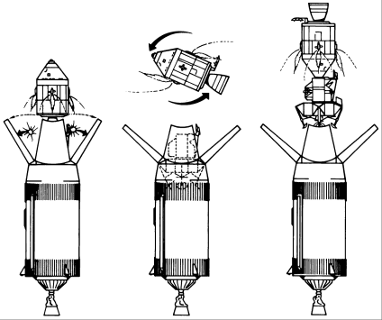
Once the S-IVB stage placed the spacecraft on a trajectory to the moon, the spacecraft-lunar module adapter panels would blossom outward 45 degrees (later they were discarded by explosion). The Apollo command and service modules would separate from the stage, pull away, turn around, dock with the lunar module, and then pull the LM away from the stage.
Another item changed Apollo manufacturing plans in Downey. NASA officials learned that North American intended to build the spacecraft - lunar module adapter* in Tulsa, Oklahoma. The Air Force had decided to cancel the Skybolt missile development program and to keep using Hound Dog missiles, which were manufactured in Downey. When the Air Force ordered more Hound Dog vehicles and demanded that production in Downey continue, some Apollo work had to be done elsewhere.32
One chief aim of the 1963–1964 period was to get both versions of the command module far enough along for a formal mockup review board to accept them as the final configuration. With a great deal of this work being done simultaneously, the task was extremely onerous. John Paup, command module manager at North American who had fretted over the slowness of the mode decision, wanted to get the systems of the earth-orbital Block I spacecraft set so he could begin production on that vehicle. At the same time, he was anxious to get the exact differences between the two vehicles delineated. Joseph Shea, who had by now replaced Frick as Apollo manager in Houston, told Paup that Block II definition was not going to be easy to arrive at, with the Block I configuration still not settled.
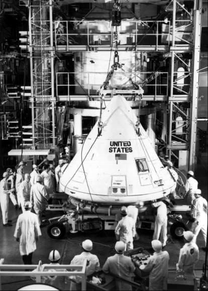
Full-scale model of the command module, above: the strake aerodynamic devices may be seen at either side of the spacecraft just above the aft heatshield.
Paup contended that several areas of common interest between the two vehicles had to be resolved immediately. One of the debates was whether to use strakes, tower flaps, or canards to stabilize the command module in the event of a launch abort. Whichever was used, the object was to get the spacecraft down in what was called the "BEF" (blunt end forward) position. Strakes were semicircular devices near the top of the heatshield that would keep the vehicle from landing on its nose. Recent changes in the subsystems had shifted the vehicle's center of gravity, which forced a lengthening of the strakes to handle the aerodynamic change. After heat-resisting ablative material was added to the longer strakes, however, they weighed too much. North American suggested using either tower flaps (fixed surfaces near the top of the launch escape tower) or canards (deployable surfaces on the forward end of the escape-rocket motor). Paup wanted to know which to install, and Shea told him to put canards on Block I and then look for some way to eliminate all these devices on Block II.33
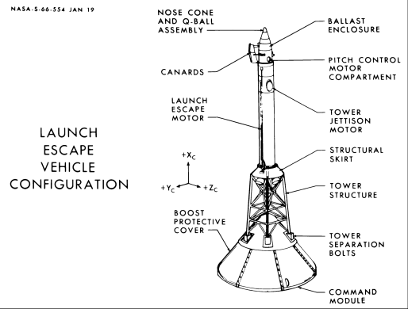
On the drawing of the launch escape system at upper right, the canard aerodynamic devices are near the top of the escape tower.
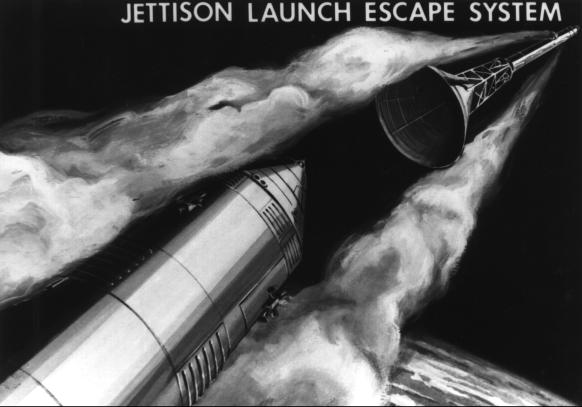
Jettison of the launch escape system (right) after successful launch, also pulls away the boost protective cover that protects the windows from flame and soot.
Another decision that would influence both spacecraft was on whether to set the vehicle down on land or water, a question that had been under discussion since mid-1962. During a meeting in early 1964, a North American engineer reported that "land impact problems are so severe that they require abandoning this mode as a primary landing mode." That was all Shea needed to settle that debate. Apollo spacecraft would land in the ocean and be recovered by naval ships as Mercury had been.34
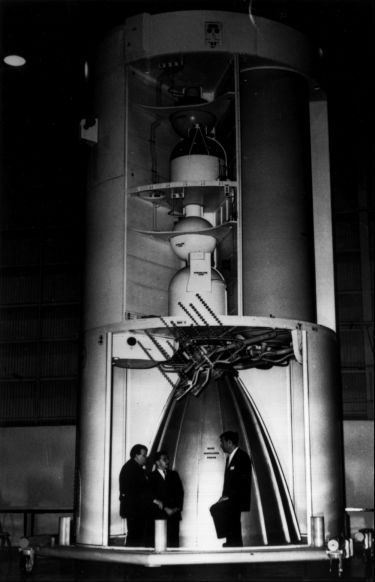
Full-scale model of the service module, resting on a mockup of a spacecraft-lunar module adapter, with panels off to reveal part of the internal arrangement.
Throughout 1963 and 1964, there were frequent meetings on command module subsystems that were common to both versions of the craft. Because space missions would be of longer duration, a concept had developed very early that the astronauts would repair or replace a malfunctioning part in the spacecraft during flight. This plan would require tools and spare parts to be carried on the missions and created another weight problem. At a subsystems discussion in April 1964, Shea told the North American engineers that NASA no longer favored this method of ensuring good working components in space. Instead, the contractor was to work toward reliability through manufacturing and test processes and by installing redundant systems. If something did go wrong, the crew should be able to shift to another system that could perform the same function as the malfunctioning one. Houston also wanted the contractor to upgrade its reliability program by improving its failure reporting practices, manufacturing schedules, engineering change controls, test plans, traceability methods, means of standardizing interface control documents, and ground support equipment provisioning.35
Houston had already taken measures in late 1963 to increase its control over and improve on subsystem development, chiefly to get the more advanced Block II command module under way. Shea asked Max Faget, chief of the Engineering and Development Directorate at the Manned Spacecraft Center, to pick experts in the engineering shops to act as subsystem managers. The managers were directed to oversee their components from design through manufacture and test. They were responsible for cost, schedules, and reliability. When changes in one unit became necessary, other systems had to be considered, and any conflicts resolved, before alterations could be made. The subsystem manager concept was therefore an excellent device for restraining engineers eternally eyeing good hardware for chances to make it better.36
North American and Grumman also made significant contributions toward controlling hardware development. As far back as mid-1962, John Disher had urged Houston to draft hardware development and flight test schedules through the first manned lunar landing. Houston submitted these schedules in October 1962. When 1963 rolled around, delays of one kind or another had made this paper nearly meaningless. Near the end of the year, North American invited the other two major contractors, Grumman and MIT, to help settle this issue. The contractors drew up charts on all three modules - command, service, and lunar - looking at development tests of subsystems, ground tests of partial and fully assembled modules, and Saturn-boosted flight tests of completed modules. Formally known as the "Apollo Spacecraft Development Test Plan," their report to NASA, outlining the tests and exact uses of every piece of hardware for the years 1964 through 1968, was called "Project Christmas Present" by the contractors.37
A second move, led by Grumman, was made in the early months of 1964. Grumman officials had complained to Shea that the frequent changes in the lunar mission concept made it impossible for the design and development engineers to decide what components they needed. The general outline of the mission was pretty well set, but the haziness about specific refinements was playing havoc with attempts to design hardware to cover all normal and contingency operations. Shea told Grumman to see if it could get the requirements pinned down. North American and MIT crews soon joined the lunar module contractor team to come up with a "Design Reference Mission."
First the group looked at what Apollo was supposed to accomplish: "Land two astronauts and scientific equipment on the near-earth-side surface of the moon and return them safely to earth." A second major objective was to carry more than 100 kilograms of scientific equipment to be set up on the moon and to bring back more than 30 kilograms of lunar soil and rocks. To make sure this was understood, the study group would have to analyze every moment of a hypothetical mission - on the ground, in space, on the moon, and during the return to the earth - from the time the stacked vehicles were rolled toward the launch pad until the command module was recovered in the Pacific Ocean. In other words, the North American-led study concentrated on getting reliable hardware to the launch pad; the Grumman-sponsored task aimed at making sure that the equipment would be able to handle the job of getting to the moon and back.
The group soon realized it had to pick out an arbitrary mission launch date - it chose 6 May 1968 - to give realism to the plan and to focus attention on every move, every procedure, in the minutest detail. Working out the specific position of the moon on that date in relation to the earth, members drew up a precise launch trajectory. Then, assuming a given number of hours spent in flight and on the moon, they calculated the corrections in the return trajectory that would have to be made to accommodate changes in the moon-earth position. The task was not an easy one. It took four months of "working like hell" to produce three thick volumes describing the sequence of events and related actions. The work would have to be updated later, of course, but the contractors had a better understanding after the exercise of what their subsystems should be and what they should do. Thus, long before the astronauts embarked on an actual lunar landing mission, the mission planners, government and contractor, had spent untold hours agonizing over every minute of that trip.38
The design reference mission study led neatly into the requirement for North American to accelerate Block II command module work. That vehicle had moved slowly following the lunar-orbit mode decision, but it would have been almost impossible to increase the speed. Until Grumman got the lunar module design relatively well set, North American engineers would have only the most general ideas of how the two vehicles would rendezvous and dock, which limited them to guesses about the influence of the docking equipment on the command module weight. The following spring, however, new mission rules gave them a clearer picture of what they were designing toward: the crew members would be able to stay in their couches during docking and the connection between the command and lunar modules would be rigid enough to maintain a pressurized pathway through which the astronauts could travel between the craft.39
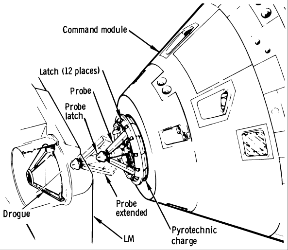
North American engineers favored probe and drogue devices to dock the command module with the lunar module. The CM probe would slip into the LM's dish-shaped drogue, and 12 latches on the docking ring would engage, to lock the spacecraft together, airtight. The astronauts could now remove a hatch, take out the docking devices, and travel between the two spacecraft. When operations were finished, they would return to the CM, reinsert the devices, install the hatch, and release the latches to disengage from the LM.
By mid-1963, North American engineers had begun work on an extendable probe on top of the command module that would fit into a dish-shaped drogue on the lunar module. They considered three possible ways of docking: (1) soft docking (latching with enough separation between the craft to make sure that pilot errors could not impair flight safety and then reeling the vehicles together), (2) hard docking (going straight in and latching without preliminaries) as a backup mode; and (3) transferring the crew by extravehicular means (getting out of one spacecraft in free space and climbing into the other vehicle) in an emergency situation. It was now apparent that the main difference between the Block I and Block II spacecraft was that Block II would be equipped with the means for docking and the pressurized crew transfer tunnel, but Block I would not.40
By March 1964, Manned Spacecraft Center and North American were close to agreement on the design of the Block I command and service modules. A Mockup Review Board** was getting ready to go to Downey, with a team of systems and structural specialists, to examine every part of the proposed model and decide what items to accept. Following NASA tradition in engineering inspections, the board would consider four categories of changes: items (1) approved for change, (2) accepted for study, (3) rejected outright, and (4) found not applicable. The review board would rule on the suggested changes on the basis of technical accuracy, desirability and feasibility, and the impact on cost and schedules.
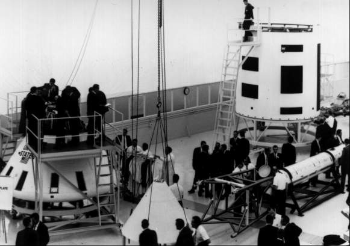
NASA and North American engineers at the April 1964 command module mockup review (above) closely examine all pieces of the Apollo command and service modules. While several engineers on the platform inspect the CM recovery system, the forward heatshield waits to be lifted into position.
At the end of April 1964, a hundred persons gathered at North American's Downey plant. After being welcomed by contractor officials, members of the board and their specialists watched as several astronauts simulated operating the vehicle. Next came a walk-around for a general examination of the spacecraft mockup and such special displays as wiring, cutaway models of subsystems, parachute packing, and electrical connectors. Managers and counterpart engineers from NASA and the manufacturer then split up into small groups to examine minutely and evaluate each piece. More than a hundred requests for changes RFCs were written on the spot for consideration by the board; 70 were approved, 14 were designated for further study, and 26 were rejected.
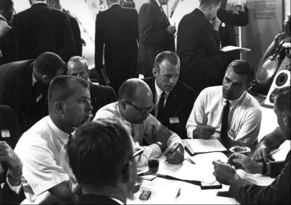
Groups of engineers of the various specialties (right) meet to discuss and list requests for changes for consideration by the NASA Review Board.
The spacecraft couches worried the board members a great deal, since the crewmen, wearing pressurized suits, fitted too snugly into their seats. As a matter of fact, an astronaut lying in a couch could not move easily, even in an unpressurized suit. Three pilots lying side by side in the couch area would be virtually immobilized. By July, adjustments had been made to alleviate this situation and to cover other suggestions by the board and its assistants. After a second mockup review, in September, NASA told North American to begin production of the Block I, earth-orbital command and service modules.41
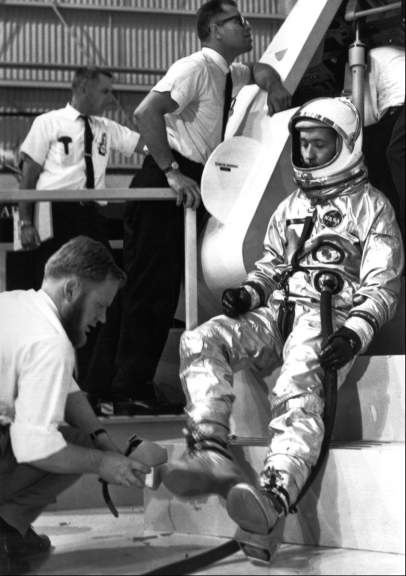
Astronaut James McDivitt receives assistance with a shoe cover before entering the command module to check out the cabin from a pilot's viewpoint.
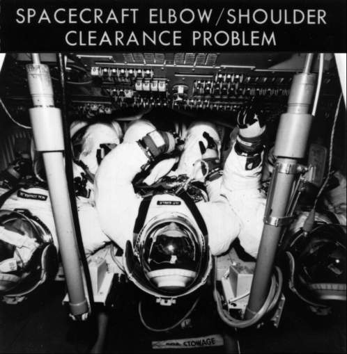
One of the most worrisome items astronauts found in the CM arrangement was an "elbow-shoulder clearance problem," Four years later, in 1968, this problem still vexed astronauts Walter Schirra, Donn Eisele, and Walter Cunningham, the first crew to fly an Apollo spacecraft.
After Project Christmas Present and the decision to use redundant systems rather than making repairs en route to the moon, work on the Block II spacecraft began to move a little faster. Since two large vehicles, the command-and-service-module combination and the lunar module, would be boosted into space, a weight-reduction program became of major importance. North American met this challenge principally by shaving kilograms off the command module heatshield and the service module structure.42
During the spring of 1964, continuing problems with the Block I and Block II vehicles triggered a change in management at North American. Dale D. Myers, program manager of the Hound Dog missile, took over as Apollo manager, replacing John Paup. Myers, a company employee since 1943, later remarked: "The first thing I did when I got on the program was to work out with Joe Shea . . . a program definition phase for Block II that [lasted from April] till October. We set up all the milestones we had to go through . . . in getting to the definition of the Block II vehicle."43
Shea and Myers assigned teams at Houston and Downey to guide the definition phase of Block II. Alan Kehlet led the contractor team, and Owen Maynard headed the NASA group. Both men had worked on Apollo spacecraft design as far back as the feasibility studies of 1960. Under their leadership, teams concentrated on such activities as charting and evaluating changes caused by abandoning the inflight repair concept, finding places in the cabin for the lunar sample boxes, studying the design of the pressurized tunnel that permitted the astronauts to move from one vehicle to the other, eyeing the probe and drogue docking mechanism, reviewing the heatshield and service module weight-reduction programs, and modifying the service module design to provide an empty bay to hold the scientific experiment equipment.44
Maynard and Kehlet planned to hold their Block II design review meeting in August, but it was 29 September before 130 board members*** and specialists had something at Downey to examine. But even this was not a complete mockup of the advanced command module, as some NASA officials had expected. The contractor presented mockups of the command module interior, including the arrangement of the upper deck and lower equipment bay, and the service module with two of its four bays exposed. Although the couches from the April Block I review were still featured, the harnesses had been modified to afford roomier seating. The hatches - inner and outer - were the same as for Block I, and the spacecraft exterior reflected only the changes from Block I. New systems, such as docking and crew transfer, were sketched out in little detail.
After the specialists had examined the mockup, they submitted 106 requests for changes. The board accepted 67, recommended 23 for further study, rejected 12, and returned 4 as not applicable. What worried everyone, government and contractor employees alike, was the lack of good, solid information on how this vehicle and the lunar module would work together on rendezvous and docking. Across the continent at Grumman's New York plant, however, the lunar module contractor had a mockup that would be ready for formal review in October. That would give North American a clearer picture of the exact changes necessary in its spacecraft. In five months, after these changes had been studied and incorporated, a formal Block II command and service module review would be held. Meanwhile, one engineer from Houston and one from Downey would be assigned to each of the 67 requests for changes that the board considered critical.45 Essentially, then, waiting for the lunar module to settle into its final form became a way of life for North American engineers.
But some of the decisions on what would constitute the North American spacecraft were not influenced by the lunar module, nor were they based on theoretical studies and ground tests. Some came from actual missions.
At White Sands, New Mexico, on the morning of 13 May 1964, a Little Joe II launch vehicle rammed Boilerplate (BP) 12 to an altitude of 4,700 meters, to see if the launch escape system could propel the spacecraft away from the booster after it had reached transonic speed. Only one incident marred an otherwise successful flight. A parachute riser broke during descent, collapsing one of the three main parachutes. The boilerplate landed safely on the two remaining parachutes, in what one engineer later called "a welcome unplanned result of the test."46
As 1964 drew to a close, the Little Joe II abort test program at White Sands was nearing its third**** and, in many ways, most crucial launch. Because of their fixed fins, the first two solid-fueled rockets had been somewhat erratic in flight. Jack B. Hurt's people at the Convair plant of General Dynamics in San Diego then built a relatively simple attitude control and autopilot system for the rest of their vehicles to allow hydropneumatic operation of "elevons," like ailerons, in each of the four fins while in flight. In addition, for the "max q" (maximum dynamic pressure) and high-altitude abort tests coming up, small reaction control motors were installed in the fin fairings to increase the precision of aiming control to the test points desired. Vehicle No. 12-51-1, as it was called, with four Recruit and two Algol motors, was the most powerful Little Joe II yet flown, intended to develop 1,500 kilonewtons (340,000 pounds of thrust) to lift itself and its cargo - BP-23 and the launch escape tower - more than 9 kilometers high. The whole assemblage, weighing 41,500 kilograms, was pointed toward the north at a point in space where the launch escape system, fitted with canards, would pull the capsule and boost protective cover away from the Little Joe II while traveling at a speed of mach 1.5. This area was in the middle of the region where a Saturn V ought to experience max q.
At precisely 8:00 on the morning of 8 December, Little Joe II roared upward, straight and true. Thirty-six seconds later - almost out of sight and two seconds, or 900 meters, early - the planned abort took place. After an 11-second coast period, the canards deployed, and the capsule tumbled four times in its turnaround before stabilizing blunt-end forward and jettisoning the escape system. The boost protective cover shattered slightly more than expected, but the two drogue parachutes deployed. Its three main parachutes opened, and BP-23 drifted gently to rest, 11,000 meters uprange from the launch site, after 7.5 minutes of flight. Max q had been higher than predicted, but all else had worked well; at the end of 1964, Little Joe II, with its payload, was ready for more stringent flight tests.47
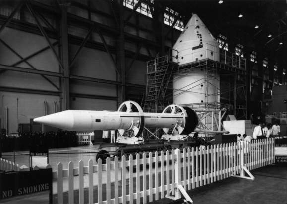
Full-scale models of the Apollo command and service modules and launch escape tower (foreground) are received in a hangar at the Kennedy Space Center for the first launch of an Apollo spacecraft by a Saturn vehicle - mission SA-6, 28 May 1964.
Across the country, in Florida, engineers and technicians from California, Texas, Alabama, and elsewhere were grooming the first Apollo-configured spacecraft model to ride aboard a Saturn I booster. Although Saturn I was no longer part of the manned Apollo program, the SA-6 launch on 28 May did prove that Marshall could build a booster to fit the command module. In the jargon of the trade, "The mission was nominal." After 54 earth circuits, BP-13 reentered the atmosphere east of Canton Island in the Pacific Ocean on 1 June. No spacecraft recovery was planned. Just three and a half months later, on 17 September, a nearly identical test of the seventh Saturn I and BP-15 had equally satisfactory results.48
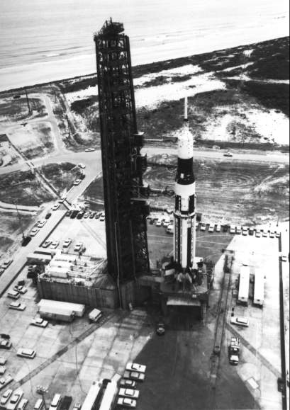
SA-6 spacecraft and launch vehicle ready to go.
Thus, in the closing months of 1964, the final form of the command ship was emerging, the management team was in better shape to handle the program, and the mission planners had a clearer picture of the multitude of steps necessary in the performance of a lunar mission. During this two-year period, the lunar module also assumed definite shape.
* The lunar module nestled inside the adapter (SLA) from launch through separation of the service module from the S-IVB. The honeycomb panels of the adapter were then explosively fired to allow the command and service modules, after turning around and docking with the lunar module, to pull the lander from the booster's third stage.
** Christopher C. Kraft, Donald K. Slayton, Caldwell C. Johnson, Owen E. Maynard, and Clinton L. Taylor would act for NASA, and H. Gary Osbon and Charles H. Feltz for the contractor.
*** Board membership had changed considerably. Maynard (Chairman), Faget, Slayton, Owen G. Morris, Taylor, and Sigurd A. Sjoberg represented NASA, and Norman J. Ryker, Jr., and Kehlet acted for North American.
**** The first Little Joe II, a qualification test vehicle without a payload, was launched successfully on 28 August 1963.
30. Frick memo, "Reorganization of the Apollo Spacecraft Project," 11 Jan. 1963; Frick and Hjornevik memo, "NAS 9-150 Contract Negotiation," 4 Jan. 1963; Markley, interview, Houston, 17 Jan. 1968; Daniel A. Linn to William Risso, "Weekly Activity Report through Period Ending Monday, June 24, 1963," 25 June 1963; Frick to NASA Hq., Attn.: D. B. Holmes, "Apollo Spacecraft Definitization Status," 29 Jan. 1963, with enc.; Henry W. Flagg, Jr., to JSC History Off., "Review of Comment Draft of Chariots for Apollo: A History of Lunar Spacecraft," 24 Nov. 1966.
31. Low and Shea to Harrison A. Storms, Jr., 16 Aug. 1963; Robert P. Young memo for record, "Meeting with Mr. H. Storms," 21 Aug. 1963; Storms to Low and Shea, 4 Sept. 1963.
32. North American, "CSM Cost/Schedule/Technical Characteristics Study: Final Report," 4 vols., NAA SID7135, 30 April 1971, 2: 24; Bothmer, minutes of 7th Meeting of MSFMC, 22 June 1962, p. 5; Sack to MSC, Attn.: Sword, "Research and Development for Project Apollo Spacecraft, NAA/Douglas Joint Use Agreement, Tulsa Oklahoma Facilities," 4 Dec. 1962; Storms to MSC, Attn.: Gilruth, "Research and Development for Project Apollo Spacecraft, Assignment of Work to S&ID-Tulsa Facility," 26 Dec. 1962; Low to Dir., OMSF, "Extension of GAM 77 (Hound Dog) Program," 14 Jan. 1963; Piland to NASA Hq., Attn.: Phillips, "Transport of Apollo Spacecraft-Launch Vehicle Adapter," 16 Sept. 1964; R. L. Barber TWX to MSC, Attn.: Shea, 30 Oct. 1964; Markley interview.
33. NASA, "Shea to Head Apollo Spacecraft Development at Manned Spacecraft Center," news release 63-226, 8 Oct. 1963; John G. Zarcaro to Chief, FOD, MSC, "Change in Configuration of the Apollo Command Module," 26 Feb. 1963; Hammock to ASPO, MSC, "Evaluation of the strakes on the dynamic behavior of the Apollo Command Module (CM)," 8 May 1963; Calvin H. Perrine to Actg. Mgr., ASPO, "Report on Trip to NAA S&ID on June 27 and 28," 15 July 1963; abstract of Flight Technology Systems Meeting No. 19, 24 July 1963; Piland to Ames Research Center, Attn.: Asst. Dir. for Aeronautics and Flight Mechanics, "Dynamic Tests of an Apollo Command Module in the 7′ × 10′ Tunnel," 1 Aug. 1963; Hammock TWX to North American, Attn.: Sack, 12 Dec. 1963; Perrine memo, "Minutes of meeting on tower flap and canards, February 7, 1964," 12 Feb. 1964; Perrine to Mgr., ASPO, "Recommended ASPO position on canard versus tower flap," 24 Feb. 1964; Perrine to Asst. Chief, Systems Engineering Div. (SED), MSC, "Visit to NAA on February 24 and 25 to discuss tower flap vs canard," 26 Feb. 1964; minutes of NASA-NAA Technical Management Meeting, 25 Feb. 1964, pp. 2, 3; Perrine to Asst. Chief, SED, "Trip Report - Visit to NAA on 24 April on WSMR program," 27 April 1964.
34. Minutes, Technical Management Meeting, 25 Feb. 1964, p. 3; Raymond L. Zavasky, recorder, minutes of MSC Senior Staff Meeting, 28 Feb. 1964; William E. Stoney, Jr., to Chief, Advanced Spacecraft Technology Div., MSC, "Apollo land landing," 10 March 1964; Freitag memo, "MSF Position on Land versus Water Landings - Apollo and Gemini," 5 March 1964; James C. Cozad, NAA, to MSC, Attn.: John B. Alldredge, "R&D for Project Apollo Spacecraft, Design of Apollo Command Module for Earth Impact," 27 April 1965.
35. Minutes of NASA-NAA Technical Management Meeting, 7–8 April 1964; Piland memo, "Sparing Concept," 19 Aug. 1963; David W. Gilbert to Mgr., ASPO, "Implementation of Built-in Redundancy for Spacecraft Sub-systems," 30 Oct. 1963.
36. MSC, "Apollo Subsystem Management Plan," 16 Dec. 1963; minutes of Structures and Mechanics Div. Apollo Subsystem Management Meeting, 29 Jan. 1964; MSC, "Apollo Operating Procedures," 10 April 1964, signed by Shea and Maxime A. Faget.
37. Disher TWX to MSC, Attn.: Gilruth, "Establishment of Guidelines for First Formal Call for Development and Flight Schedules for the Manned Space Flight Program," 12 July 1962; Low to MSC, Attn.: Gilruth, "Manned Space Flight Program Launch Schedule for Apollo and Saturn Class Vehicles" [October 1962], with enc., subj. as above, OMSF directive M-D M 9330, 15 Oct. 1962; Storms to Low and Shea, 4 Sept. 1963; North American, "Apollo Spacecraft Development Test Plan," AP 63-86, December 1963; North American, "CSM Characteristics Study," vol. 2. Cf. an earlier plan, MSC, "Command and Service Module Test Program through the First Manned Apollo Mission," 15 July 1963; Kehlet to Grimwood, 7 Jan. 1977.
38. James L. Decker to Grumman, Attn.: Robert S. Mullaney, "Apollo Project Spacecraft Integration Review Action Items - Line Item 13," 24 Sept. 1963; idem, "Development of Apollo Lunar Landing Mission Design Plan," 11 Sept. 1963; Hammock TWX to North American, Attn.: Sack, 3 Dec. 1963; D. R. Treffeisen to Apollo Mission Planning Task Force Members, "Minutes of 1st Direction Group Meeting - 12/16/63," 17 Dec. 1963; Thomas G. Barnes et al., "Apollo Mission Planning Task Force, Phase I Progress Report," Grumman LED-540-7, 4 May 1964, 3 vols., especially 1: 3-1 and 3-5, 2: 7-2, 3: A-7; Arnold B. Whitaker, interview, Bethpage, N-Y., 12 Feb. 1970; John Boynton, interview, Houston, 27 April 1970.
39. Minutes of MSC-NAA Apollo Spacecraft Design Review no. 7, 13–14 Dec. 1962, p. 4; Caldwell C. Johnson memo, "Docking Ground Rules: and Design Criteria," 1 April 1963, with enc., "Docking Concept Ground Rules and Design Criteria," SSS-DC304, 25 March 1963; Rene A. Berglund to Hammock, "Docking Study Background and Report on Trip to NAA to Review Their Docking Mechanisms Studies," 8 May 1963, with enc.
40. Piland TWX to North American, Attn.: Sack, and MSC-RASPO, Attn.: George M. Lemke, "Docking Simulation," 26 June 1963; Owen E. Maynard to Piland, "Docking," 9 July 1963; Decker to Grumman, Attn.: Mullaney, "LEM-CM Docking Concept Selection," 16 July 1963; H. Gary Osbon TWX to MSC, Attn.: Piland, 26 July 1963; Maynard to Dep. Mgr., LEM, "Extendible Boom Docking Simulation Plans," 20 Aug. 1963; J. R. Berry TWX to Grumman, Attn.: P. Gardner, "Confirmation of Telecon between R. Gustavson and P. Gardner re Columbus Docking Simulation Study," 15 Aug. 1963; Hammock to North American, Attn.: Sack, "Apollo Docking Concept," 31 Dec. 1963.
41. Clinton L. Taylor TWX to North American, Attn.: Sack, 9 March 1964; Shea memo, "Apollo Mockup Review," 11 March 1964; Maynard memo, "Mockup Review of Block I Command and Service Modules," 23 April 1964, with enc.; MSC, "Board Report for NASA Inspection and Review of Block I Mock-up Command and Service Modules, April 23–30, 1964"; Osbon to MSC, Attn.: Taylor, "R&D for Project Apollo Spacecraft, Transmittal of Minutes, Block I Coordination Meeting NASA/NAA, July 9–10, 1964 at Downey, California," 20 Aug. 1964, with encs., minutes, "NAA Comments - Block I Definition," 9 July 1964, and "Block I Definition Milestones," 10 July 1964; minutes of NASA-NAA Technical Management Meeting, 17 Sept. 1964; Maynard memo, "Distribution of Block I Specification Negotiation Minutes, dated 28 September 1964 and Review of Negotiated Block I Specifications, dated 1 October 1964," 9 Oct. 1964.
42. Kehlet to Grimwood, 7 Jan. 1977.
43. Ralph B. Oakley, "Historical Summary: S&ID Apollo Program," 20 Jan. 1966, p. 10; NASA, "Dale D. Myers," biographical data, February 1971; Myers, interviews, Downey, Calif., 12 May 1969, and Washington, 11 Sept. 1970.
44. Kehlet to Grimwood, 7 Jan. 1977.
45. Maynard memo, "CSM Block II changes transmitted to NAA for implementation," 19 June 1964; MSC, "Board Report for NASA Inspection and Review of Block II Mockup, Command and Service Modules, September 29–October 1, 1964," especially app. I, Yschek letter to North American, ["Contract Change Authorization No. 224"], with enc., "Apollo C&SM Block II Changes," and Appendix 4; MSC, "Board Report for NASA Inspection and Review of M-5 Mockup, Lunar Excursion Module, October 5–8, 1964."
46. Maynard memos, "Mission A-001 preflight launch phase trajectory input data," 20 April 1964, and "Launch Escape Vehicle trajectory input data for Mission A-001 (Boilerplate 12) flight test," 6 May 1964; MSC, "Postlaunch Report for Apollo Mission A-001 (BP-12), MSC-R-A-64-1," 28 May 1964, pp. 1-1, 3-1, 3-2, 4-111 through 4-118; MSC, "Apollo Boilerplate 12," news conference, 13 May 1964; Emory F. Harris to Chief, Mgmt. Analysis Div., Attn.: Clarence Presswood, "Significant Accidents and Failures," 10 Dec. 1964; Carl R. Huss memo, 2 Nov. 1976.
47. Perrine to Apollo Support Group, Attn.: John P. Bryant, "Request for trajectory analysis in support of the BP-23 flight test," 19 May 1964; Paul E. Fitzgerald and Phillip L. Suttler, Jr., memo, "Minutes of meeting on BP-23," 25 May 1964; Fitzgerald memo, "Mission requirements for mission A-002 (BP-23)," 16 June 1964; Taylor TWX to North American, Attn.: Sack, 16 June 1964; Fitzgerald and Zack H. Byrns memo, "Minutes of meeting on BP-23," 29 June 1964; MSC, "Postlaunch Report for Apollo Mission A-002 (BP-23)," MSC-R-A-65-1, 22 Jan. 1965; General Dynamics, Convair Div., "Little Joe II Test Launch Vehicle, NASA Project Apollo: Final Report," 1, May 1966.
48. North American, "Project Apollo Flight-Test Report, Boilerplate 13," SID 63-1416-3, August 1964, pp. 2-1, 2-2; "Postlaunch Report for Apollo Mission A-101 (BP-13)," MSC-R-A-64-2, 18 June 1964, pp. 2-1, 3-2 through 3-5, 4-1 through 4-3, 7-1; KSC, "Apollo Spacecraft BP-13: A Chronology of Technical Progress at Kennedy Space Center," SP-188, 7 May 1965; MSC, "Postlaunch Report for Apollo Mission A-102 (BP-15)," MSC-R-A-64-3, 10 Oct. 1964 pp. 1-1, 1-2, 2-1, 2-2.